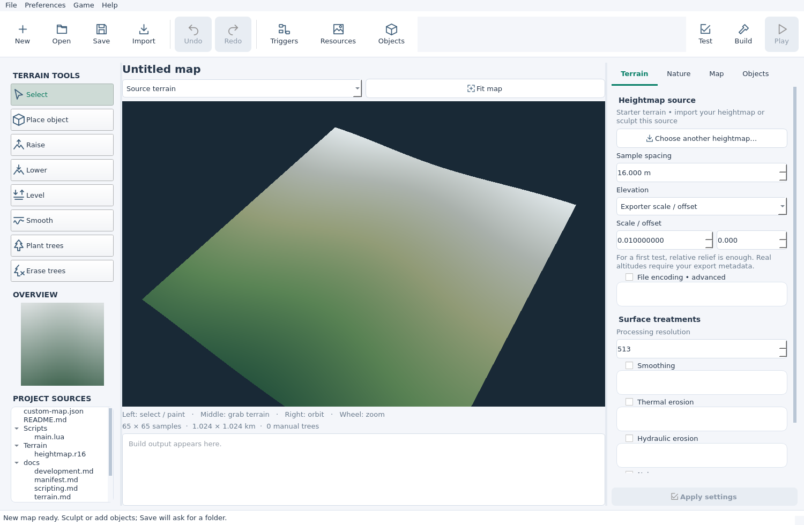
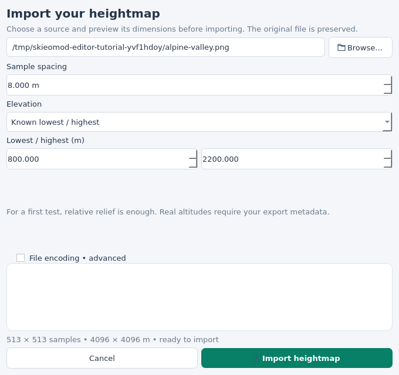
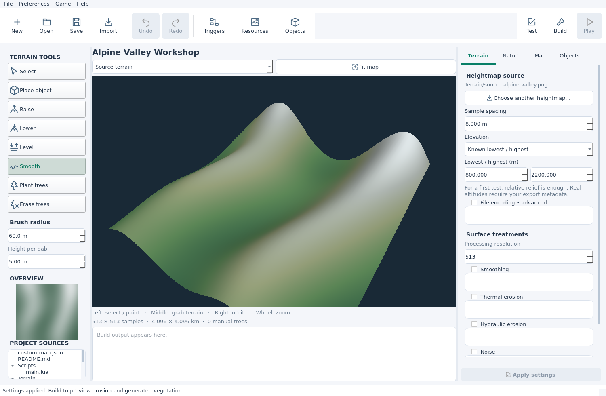
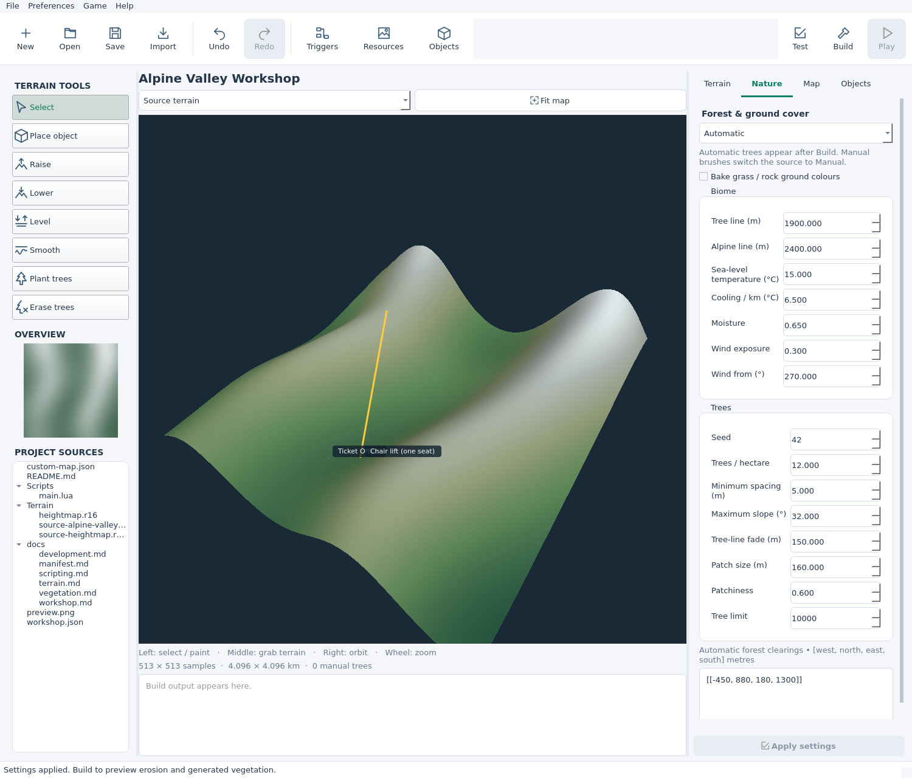
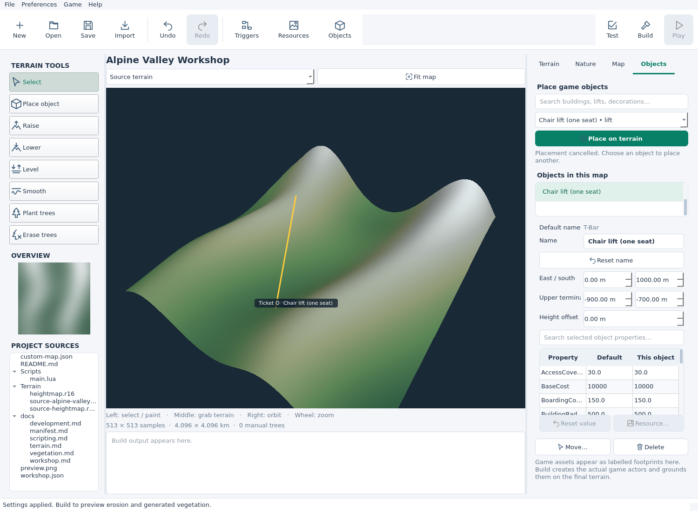

STEP 01
Open the workshop
Install the current skieo-custom-map tools with Python 3.10+ and pipx using the installation guide. Qt and the OpenGL dependencies are included. You need a graphical desktop and an OpenGL-capable driver.
Install or update skieomod
With Python and pipx installed, open a terminal and run:
pipx install --force --index-url https://skieomod.emillon.fr/downloads/pypi/ skieo-custom-mapIf this is your first installation, follow the installation guide to prepare pipx and your PATH. Game setup can be done from the editor in step 7.
Launch the editor from a terminal:
skieomod editorClick New, or Create a map on the welcome panel. An empty map opens immediately with the base terrain. If the workshop reopens your last map, New starts another.


- Left: brushes and their settings, overview and project files.
- Centre: the 3D terrain, Source/Last built selector and output panel.
- Right: Terrain, Nature, Map and Objects tabs.
The top toolbar contains Save, Build, Test and Play, plus separate editors for triggers, resources and object defaults. After launching, this walkthrough uses the graphical controls.
Checkpoint: you can see the base terrain and rotate it. Authoring works without the game; Play needs Ski-E-O! or its Steam demo on Windows or Linux with Proton.
STEP 02
Choose a terrain
You can sculpt the base terrain and go straight to step 3. Import is optional. If you already have a heightmap, click Import, choose your R16/RAW or 16-bit grayscale PNG, and enter the Sample spacing in metres from your exporter.
OPTIONAL PRACTICE TERRAIN
Alpine Valley
Use this synthetic CC0 heightmap to follow the illustrated example. It has 513 × 513 samples, 8 m spacing and elevations from 800 to 2200 m.

For the practice file, use these import settings:
| Setting | Practice value |
|---|---|
| Sample spacing | 8 m |
| Elevation | Known lowest / highest |
| Lowest / highest (m) | 800 / 2200 |
| File encoding | Leave automatic |


Settings for your own heightmap
Relative test: 0–1000 m gives a first relief preview without altitude metadata. For real altitudes, select Known lowest / highest or Exporter scale / offset using your export settings. Pixels alone cannot recover real altitudes.
PNG dimensions come from its header. A square R16 can infer dimensions from file size. For rectangular raw data, open File encoding • advanced and enter at least one known side under Samples across / down. Select R16 big-endian only if your exporter used it.
PNG must be non-interlaced, 16-bit grayscale without alpha. An ordinary colour or 8-bit image needs a suitable new export. Width in metres is (samples across − 1) × sample spacing; use the exporter’s spacing rather than copying the practice value.
Checkpoint: the practice import reports 513 × 513 samples • 4096 × 4096 m. Click Fit map to see your whole terrain.
STEP 03
Navigate and shape the slopes
Keep Source terrain selected above the viewport. This is the editable terrain.
| Control | Action |
|---|---|
| Right drag | Rotate the camera |
| Middle drag | Grab and move the terrain view |
| Mouse wheel | Zoom; over a panel, scroll that panel |
| Fit map / Overview | Show the full terrain / click to move to a part of it |
Choose Raise or Lower on the left, set a brush radius and left-drag on the terrain. For practice, start with 60 m radius and 1 m height per dab. Each brush dab changes the elevation; inspect the result from another angle before adding more.
Use Level for a small resort base. Leave Level height (m) blank to pick the elevation at stroke start, or enter a height. Use Smooth to soften its edges. Ctrl+Z / Ctrl+Y undo and redo entire strokes; Escape cancels a stroke. Choose Select when finished.


Optional smoothing and erosion at build time
Start with the Terrain panel’s surface treatments off. To try one later, enable its group, adjust its settings and click Apply settings, then Build. Inspect Last built terrain for the result. Every build starts from the source, so erosion does not accumulate each time.
Checkpoint: you can shape a small area, undo the stroke and redo it.
STEP 04
Name and save the project
Open the Map tab on the right. Set Name, Authors, Package ID, Version, Licence and Description. For your own map, use an ID such as yourname.alpine-valley and a version such as 0.1.0. Keep the ID for future releases and credit imported resources.
Leave the location fields blank for an imaginary place. If you supply a location, enter both latitude and longitude. Leave dependencies empty for this first map.
Click Apply settings → Save or press Ctrl+S. The first save asks for an empty writable folder. Create one in the chooser if needed, select it and click Save map here. Later saves use the same folder.
The source folder contains your editable project. Keep it for future changes. The built .skieomap is the playable archive. To resume editing, click Open and choose the source folder containing custom-map.json, or use File → Recent maps.
Checkpoint: the map has its new name and a saved source folder. You can reopen it with Open.
STEP 05
Add a forest
Choose how you want to author trees. For a manual forest, select Plant trees, set the radius and Tree spacing, and paint. Use Erase trees to clear a route or the base area. Painting switches Nature to Manual.
For an automatic forest, open Nature and choose Automatic. In Alpine Valley, try Tree line (m): 1900, Trees / hectare: 12 and Tree limit: 10000. Click Apply settings. Generated trees appear after Build in Last built terrain.


Adapt the tree line to your map’s elevations, especially if you used relative heights. Automatic clearings use exclusion rectangles; erasing with a brush switches to Manual.
Clear the lower terminal area in the practice map
The automatic exclusions box takes rectangles as [west, north, east, south] in metres. The downloadable project uses [[-450, 880, 180, 1300]] beside its lower terminal. Leave [] for no exclusions.
Bake grass / rock ground colours is optional. It creates ground colour, not 3D grass blades.
Checkpoint: manual trees are visible immediately, or Automatic is selected and ready for Build.
STEP 06
Place a small resort
Switch to Source terrain and open the Objects tab on the right. Search for Ticket Office, choose it from the palette and click Place on terrain. Left-click a level area at the resort base. Press Escape afterwards so the next click does not place another building.
Search for a lift, such as Chair lift (one seat), and click Place on terrain again. Click the lower terminal first, then the upper terminal uphill. Keep both inside the map. Press Escape to return to selection.


Select an instance in Objects in this map or near its footprint in the viewport. Edit its name, position, rotation or height offset; lifts also have Upper terminal coordinates. Use Move… to pick a new position or Delete to remove it. Undo/Redo works for placements too.
The right-hand tab edits individual instances. The separate Objects toolbar button opens the Object Editor for defaults shared by an object type; you can leave those defaults alone for this exercise.
Checkpoint: your object list contains a building and a lift. A heightmap or lift does not draw pistes; lay them out in the game while testing the resort.
STEP 07
Build, validate and play
- Save → Build. Read the output below the terrain. A successful build selects Last built terrain, showing the compiled forest. Your playable
.skieomapis in the source folder’sbin/directory. - Test. Wait for Project validation passed. This checks the project without launching the game. Fix any reported problem in its panel; build again if you changed the map.
- Game → Configure Steam installation… For your first Play, close the game and choose the Steam game folder containing
SkiResortSimulator. Setup installs Custom Map/UE4SS and remembers the paths. On Linux, launch the game through Steam once beforehand to prepare Proton. - Play / F5. The editor saves, rebuilds, installs your map and starts a separate test instance. Check the slopes, forest, buildings and lift. Try making a piste and using the resort.
Build, Test and Play save current editor changes before running. Play starts a fresh resort with your authored objects. After editing, press Play again to rebuild and reload the same test instance once loading has finished. Existing game saves retain their own buildings and removals; use the editor test for a changed starting layout.
To edit after Build, return to Source terrain. Brushes and placement are disabled in Last built terrain. The workshop preview uses simplified terrain colours and tree geometry; check snow, game materials and gameplay in the game.
If an update is available, use Game → Update Custom Map loader with the game closed. Upgrade the tools separately through Game → Upgrade skieomod….
Checkpoint: Build produces the archive, Test passes, and Play lets you inspect the resort in the game.
Troubleshooting
| Symptom | What to do |
|---|---|
| Import heightmap stays grey | Read the dialog feedback. Check spacing, altitude range, raw dimensions and image format. |
| Save map here stays grey | Select an empty writable folder. Create a new folder in the chooser if needed. |
| Save, Build or Test is disabled | Finish the current operation or fix the inline settings error. |
| Brushes or placement are disabled | Switch from Last built terrain to Source terrain. |
| No automatic trees | Build, select Last built terrain, then check tree line, density, slope limit and exclusions. |
| An extra building appeared | Undo the extra placement and press Escape to leave placement mode. |
| Play is disabled | Configure the Steam installation from the Game menu. Wait if the test is still loading. |
| Build or Play fails | Read the output panel and fix the reported problem. Launch errors also give a log path. |
| A source file changed externally | Reopen the source project before saving again. |
| An old save shows old objects | Use Play with a fresh resort to test the updated starting layout. |